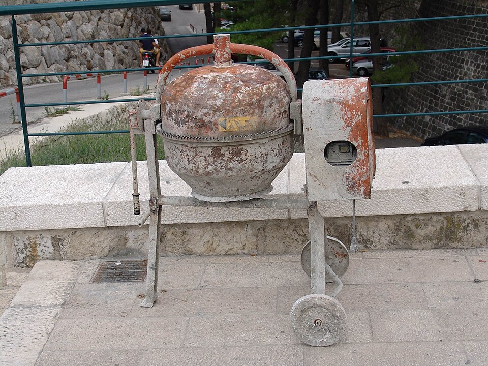 | Bétonnière | Parked cement mixer.jpg | Auteur non indiqué | Public domain |
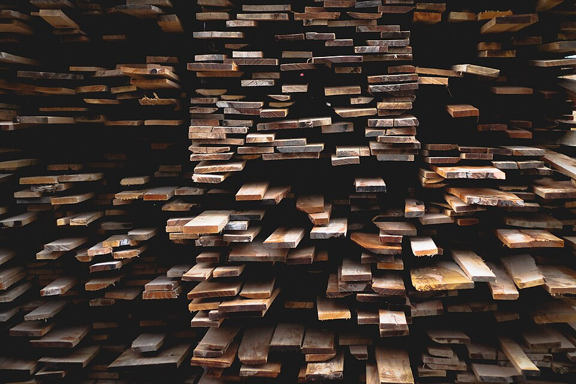 | Bois de charpente | Stacked wood planks (Unsplash).jpg | Alex Jones alexjones | CC0 |
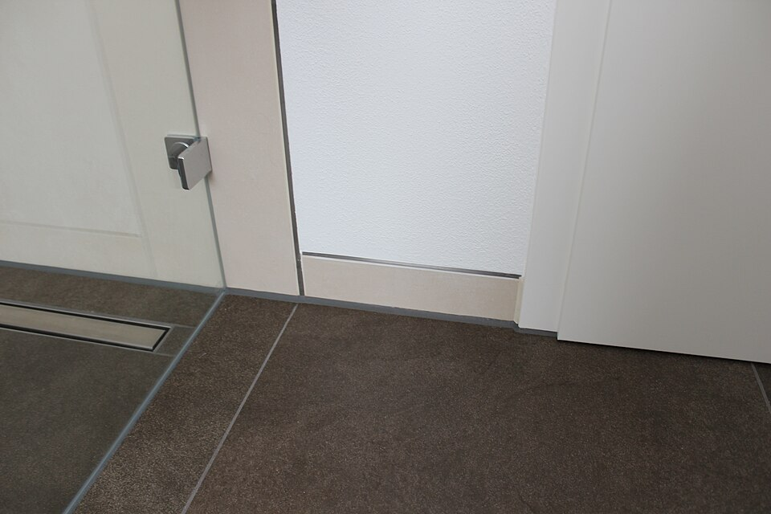 | Carrelage | Fliesen Schiene Anschluss andere Oberflächen.JPG | Sonja1982 | CC BY-SA 4.0 |
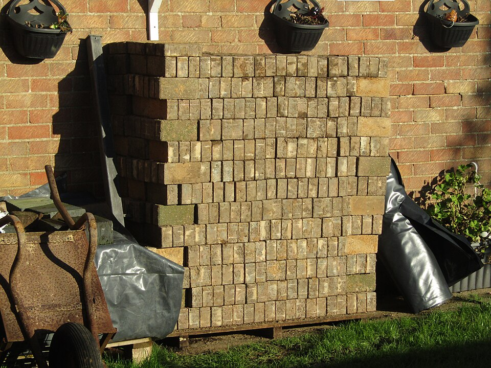 | Dalles et pavés | -2021-01-09 Reclaimed concrete paving blocks, Trimingham, Norfolk (2).JPG | Kolforn (Kolforn) | CC BY-SA 4.0 |
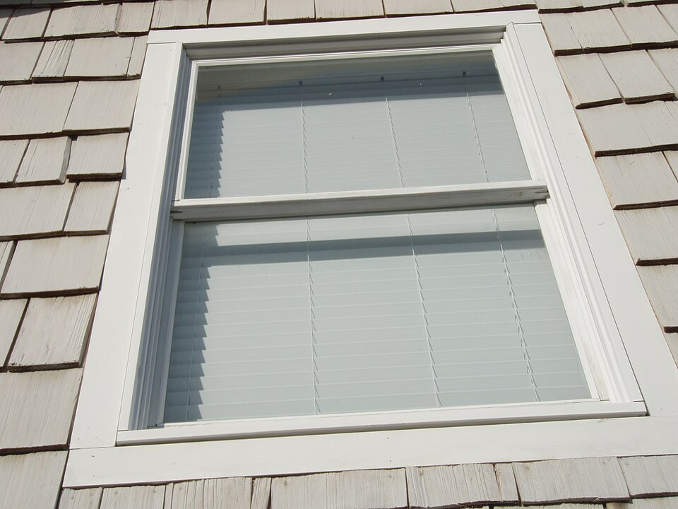 | Fenêtre | Double hung window.jpeg | Tucker T | CC0 |
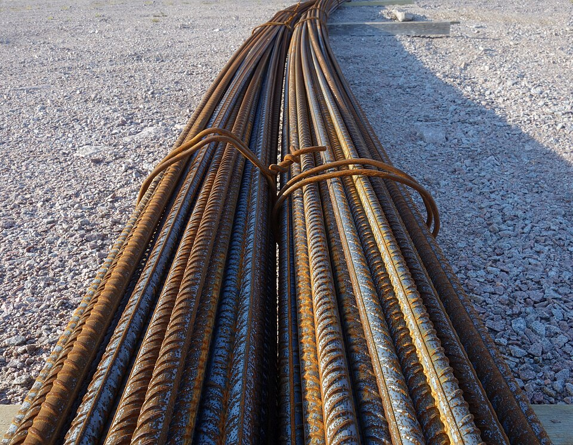 | Fers à béton | A bunch of rebar.jpg | W.carter | CC BY-SA 4.0 |
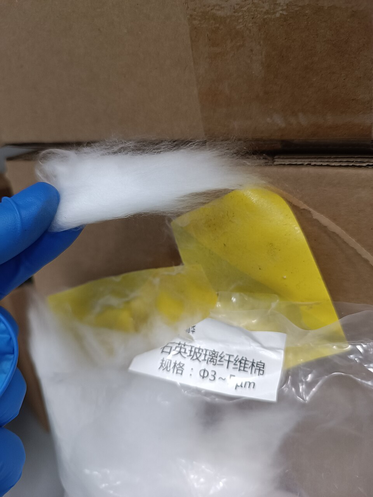 | Laine de verre | Quartz glass wool.jpg | Sufangxi | CC BY 4.0 |
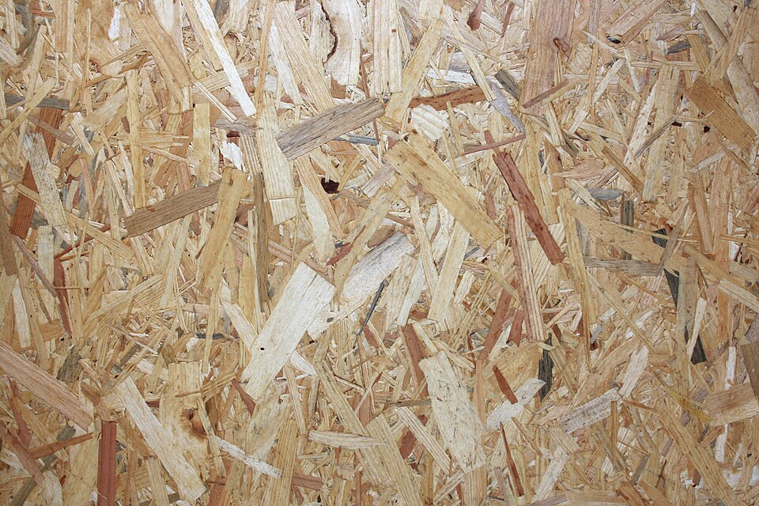 | Panneaux OSB | Oriented strand board at Courtabœuf 2011.jpg | Lionel Allorge | CC BY-SA 3.0 |
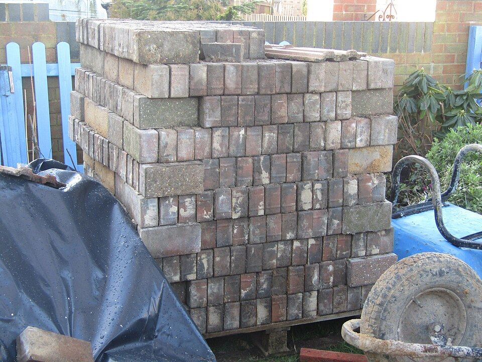 | Parpaings | -2021-01-09 Reclaimed concrete paving blocks, Trimingham, Norfolk (1).JPG | Kolforn (Kolforn) | CC BY-SA 4.0 |
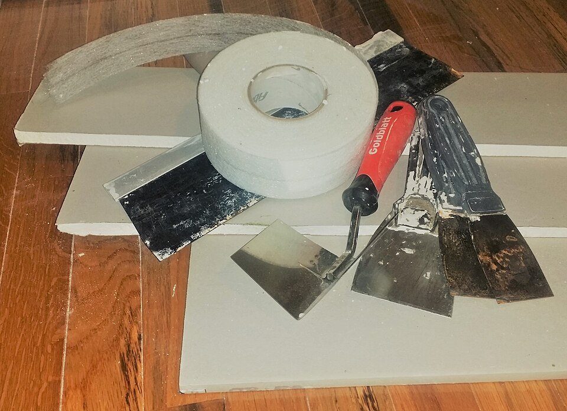 | Plaques de plâtre | Drywall and tools.jpg | Timothyjosephwood | CC BY-SA 4.0 |
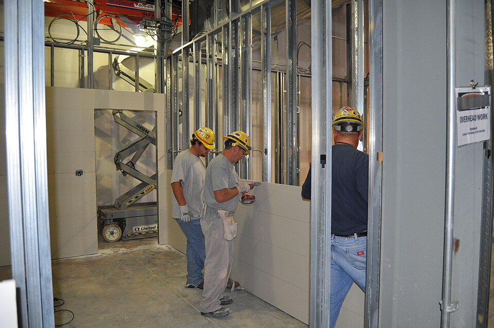 | Rails et montants métalliques | Blue Grass Chemical Agent-Destruction Pilot Plant Control and Support Building (6195050751).jpg | PEO ACWA | CC BY 2.0 |
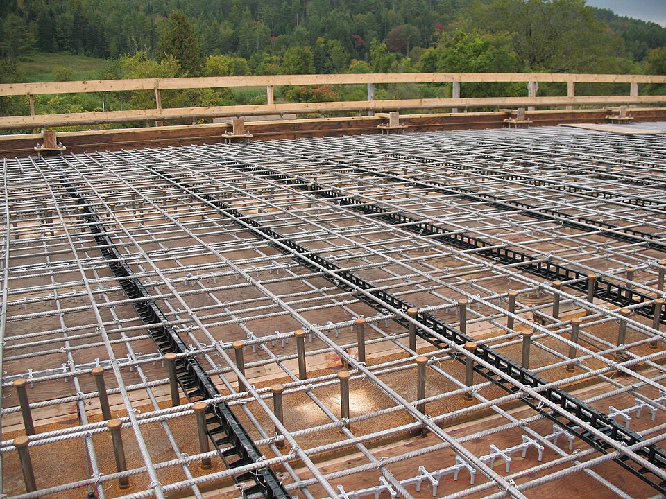 | Treillis soudé | Deck Reinforcement VT (8495188335).jpg | Federal Highway Administration | Public domain |
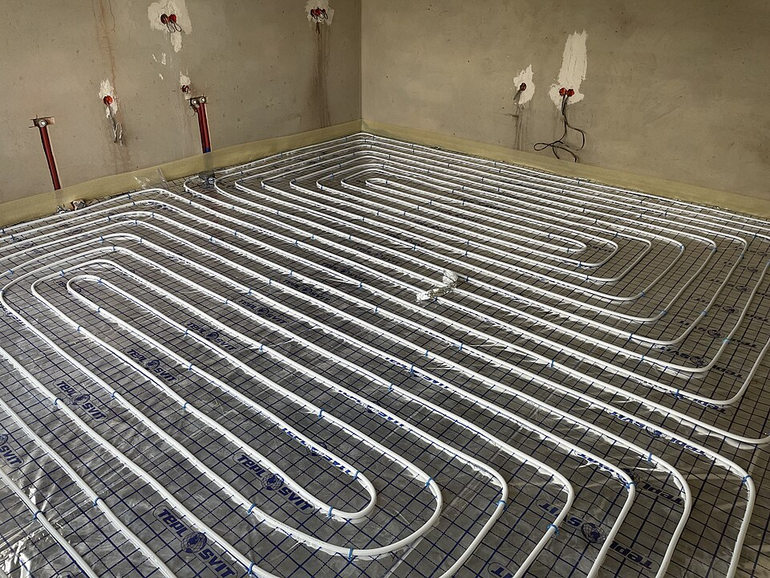 | Tubes PER | Underfloor heating pipes 1.jpg | Viii23dawari | CC BY-SA 4.0 |
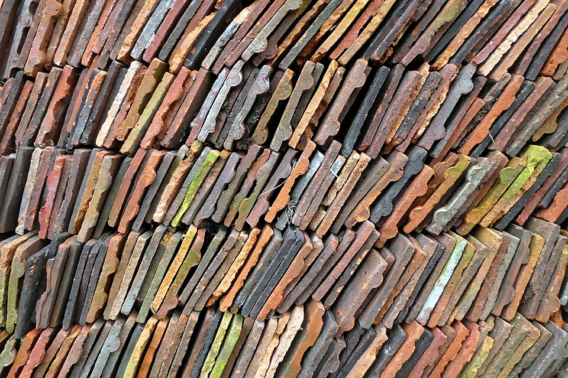 | Tuiles en terre cuite | The Plough in Lower Beeding, West Sussex, England, roof tile stack.jpg | Acabashi | CC BY-SA 4.0 |

.jpg){kind=link}

.JPG){kind=link}


.JPG){kind=link}

.jpg){kind=link}
.jpg){kind=link}